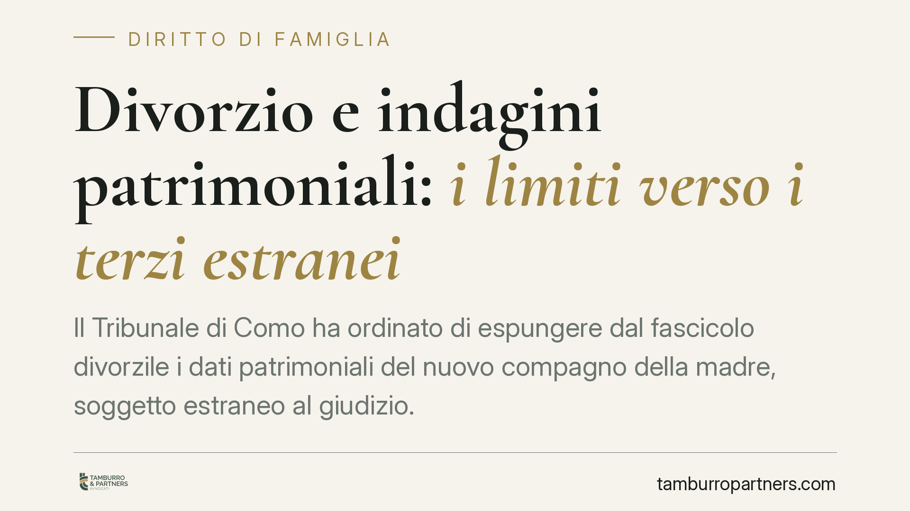

Divorzio e indagini patrimoniali: i limiti verso i terzi estranei
Il Tribunale di Como ha ordinato di espungere dal fascicolo divorzile i dati patrimoniali del nuovo compagno della madre, soggetto estraneo al giudizio. La decisione fissa un principio pratico: nel contenzioso familiare le indagini economiche non possono allargarsi a chi non è parte, se mancano presupposti fattuali concreti. Un richiamo alla tutela della riservatezza che riguarda ogni separazione conflittuale.

Il caso
Nel corso di un procedimento di divorzio, nel fascicolo erano confluiti dati patrimoniali riferiti non al coniuge, ma al nuovo compagno della madre. Un soggetto, cioè, del tutto estraneo al giudizio. Il Tribunale di Como, con provvedimento dei giudici Agostino Abate e Nicoletta Sommazzi, ha disposto l'espunzione di quei dati dal fascicolo, riconoscendo l'invasione indebita della sfera di riservatezza di un terzo.
La motivazione poggia su un punto preciso: mancavano i presupposti fattuali per coinvolgere quella persona nelle verifiche economiche finalizzate alla quantificazione del mantenimento dei figli. In assenza di elementi che leghino il terzo alle obbligazioni oggetto di causa, acquisirne la situazione patrimoniale è un'ingerenza non giustificata.
Inquadramento
Nel contenzioso familiare il giudice dispone di ampi poteri istruttori d'ufficio. Può ordinare indagini sulla situazione economica delle parti, anche tramite la polizia tributaria, per accertare redditi e patrimoni rilevanti ai fini dell'assegno di mantenimento. Si tratta di un potere pensato per superare le asimmetrie informative tipiche delle crisi coniugali, dove un coniuge può occultare la propria reale capacità contributiva.
Questo potere, però, incontra due limiti. Il primo è la pertinenza: le indagini devono riguardare i soggetti del rapporto obbligatorio, cioè i coniugi (ed eventualmente i figli), non chi orbita intorno alla vita privata di una delle parti. Il secondo è il bilanciamento con la protezione dei dati personali. Il Regolamento UE 2016/679 (GDPR) e il Codice privacy (d.lgs. 196/2003, come modificato) impongono che il trattamento dei dati sia limitato a quanto necessario rispetto alle finalità del procedimento (principio di minimizzazione, art. 5 GDPR).
Un terzo estraneo al giudizio non perde la propria tutela solo perché frequenta sentimentalmente una delle parti. La sua posizione economica diventa rilevante unicamente se concorre, in modo concreto e documentato, a mutare le condizioni di vita del nucleo: convivenza stabile, contribuzione effettiva alle spese, formazione di una nuova famiglia di fatto. In mancanza di questi elementi, l'acquisizione dei suoi dati è sproporzionata.
Implicazioni pratiche
La decisione interessa chi affronta una separazione o un divorzio ad alta conflittualità, dove non è raro che una parte tenti di far emergere la "ricchezza" del nuovo compagno dell'altra per ridimensionare il proprio obbligo di mantenimento, o al contrario per aggredire l'ex coniuge sul piano reputazionale.
Il messaggio è duplice. Da un lato, non basta allegare l'esistenza di una nuova relazione per ottenere indagini sul terzo: occorre dedurre fatti specifici che colleghino quella persona agli oneri economici in discussione. Dall'altro, chi subisce un'intrusione del genere ha strumenti per reagire, chiedendo l'espunzione dei dati e, nei casi più gravi, rivolgendosi al Garante per la protezione dei dati personali.
Va ricordato che la nuova convivenza del coniuge può comunque rilevare, ma per altra via: incide sul diritto all'assegno quando dimostra una stabile organizzazione di vita che muta le condizioni economiche complessive. Rilevano gli effetti sul coniuge, non la radiografia patrimoniale del nuovo partner.
Cosa fare in concreto
- Verifica la pertinenza delle richieste istruttorie. Prima di chiedere indagini su un terzo, individua e deduci fatti concreti che lo colleghino alle obbligazioni di mantenimento. Senza presupposti fattuali, l'istanza è destinata al rigetto.
- Contesta l'acquisizione indebita. Se nel fascicolo compaiono dati di un soggetto estraneo, chiedi tempestivamente al giudice l'espunzione, documentando l'assenza di collegamento con l'oggetto della causa.
- Distingui i piani. Se intendi far valere la nuova convivenza dell'ex coniuge, concentra le prove sugli effetti economici a suo carico, non sulla situazione patrimoniale del partner.
- Tutela i dati del terzo coinvolto. Chi è estraneo al giudizio e si vede trattare i propri dati può segnalare la violazione al Garante privacy e valutare le ulteriori tutele previste dal GDPR.
- Documenta con rigore. In materia patrimoniale la genericità non paga: allega estratti, contratti, movimenti e ogni elemento che dia concretezza alle deduzioni.
Consigliamo di impostare le richieste istruttorie con attenzione alla proporzionalità: un'iniziativa esplorativa e non mirata rischia non solo il rigetto, ma anche conseguenze sul piano della responsabilità per trattamento illecito di dati.
---
*Contributo informativo a cura di Tamburro & Partners - Avv. Giuseppe Tamburro. Non costituisce parere legale.*
Ogni famiglia ha il suo equilibrio.
Separazione, divorzio, affidamento, assegno: se vuoi un confronto riservato su una specifica situazione, scrivi allo studio. Ti rispondiamo entro un giorno lavorativo.